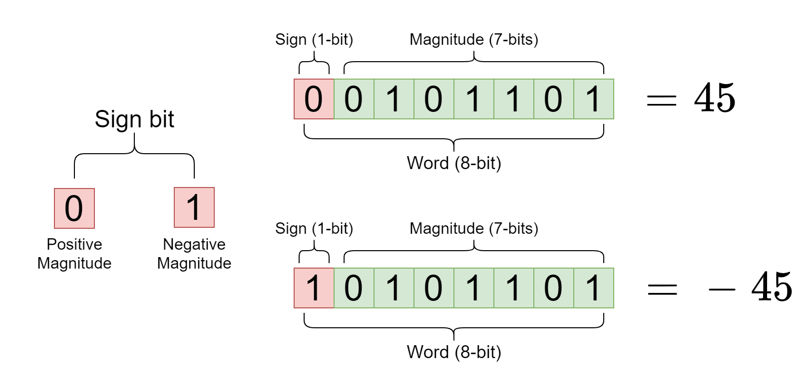
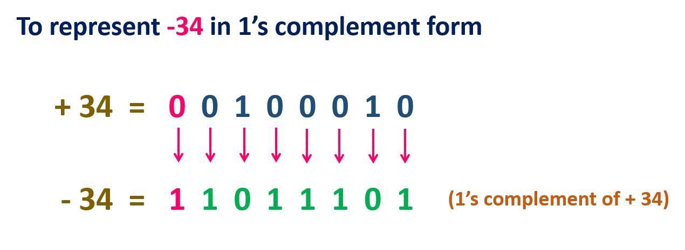
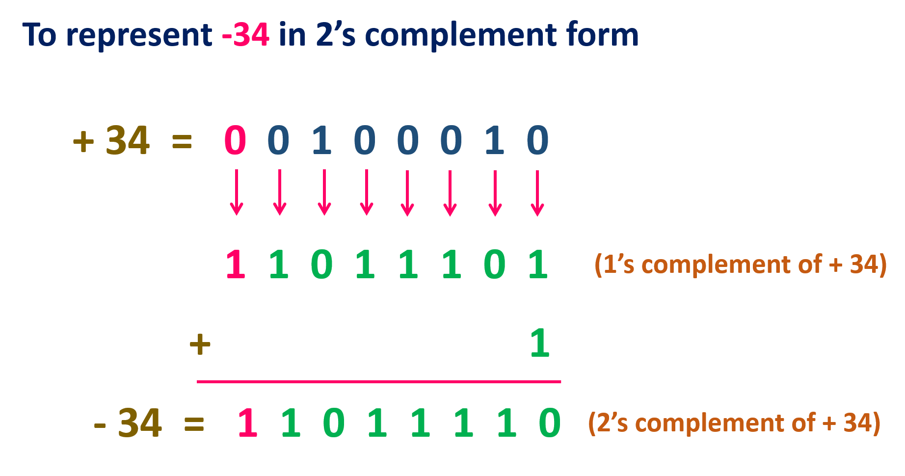
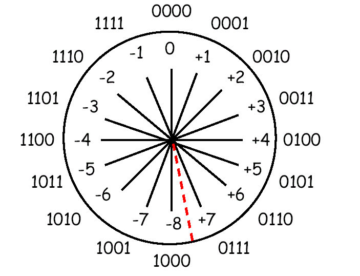
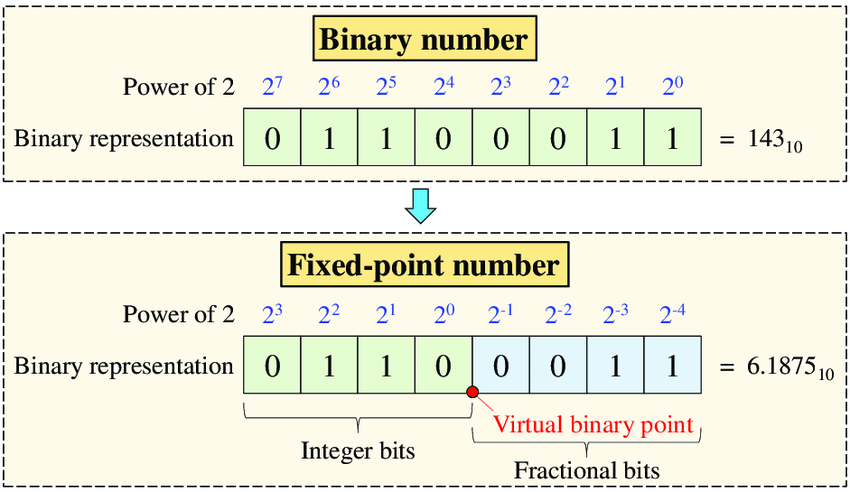
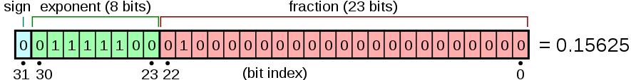
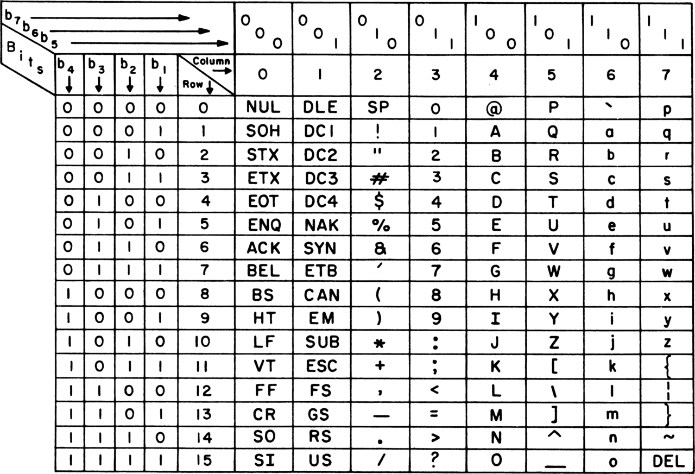
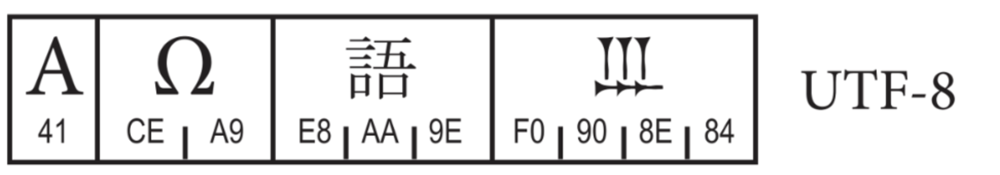
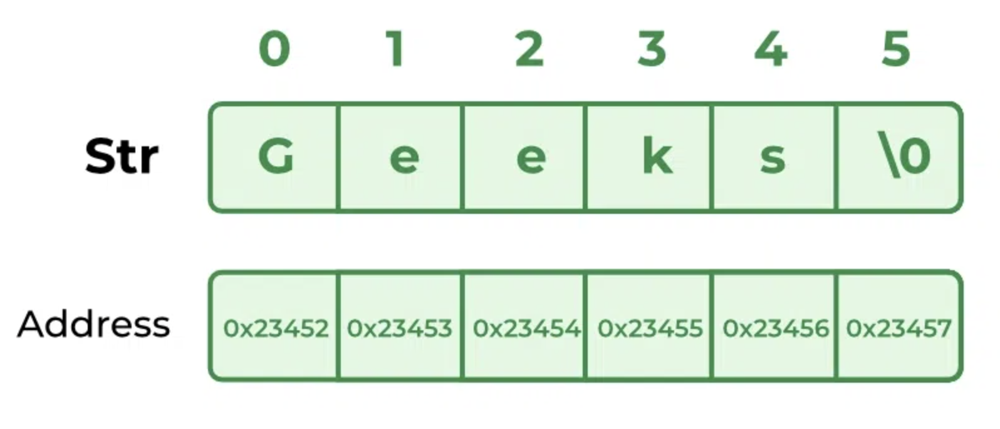

Computer Architecture
and Software Execution Process
Data representation
Bachelor in Artificial Intelligence, Data and Management Sciences
CentraleSupelec and ESSEC Business School - 2024/2025
CentraleSupelec and ESSEC Business School - 2024/2025

Processor Arithmetic
- A processor is made of several logic circuits (more details in Chapter $4$).
- A logic circuit uses only two values $\to$ $0$ and $1$ (bits).
-
All information handled by a processor must be encoded in binary.
- integer numbers, real numbers, texts, pictures, ...
- For natural numbers $\to$ classic binary representation (see Chapter $1$).
- Encoding is required for other data types.
Finite precision arithmetic
-
The processor only manipulates numbers with a fixed representation size
$\to$ $1$, $2$, $4$ or $8$ bytes.- Example: Integer $\to$ $4$ bytes ($4 \times 8$ bits $= 32$ bits $\to 2^{32}$ different values)
-
This means all data types have a finite domain $\to$ possible
overflows in programming languages.- Max. value $\to 2147483647$
- Min. value $\to -2147483648$
- $2147483647 + 1 = ?$ ($= -2147483648$ next slides)
Natural numbers
Classic binary representation
- Generally, we use the binary representation, as detailed in Chapter 1.
-
Example $\to$ case of using $32$-bit encoding ($235_{10}$)

- We convert to binary and complete with zeros on the left to reach 32 bits.
- $235_{10} = 00000000~00000000~00000000~11101011_2$
Natural numbers
Binary-Coded Decimal (BCD)
-
BCD is a class of binary encodings of decimal numbers where each digit
is represented by a fixed number of bits ($4$ or $8$ bits). -
Example $\to$ case of using $32$-bit encoding (each digit is represented by $8$ bits)
$214 = ~?$0 2 1 4 00000000 00000010 00000001 00000100 - $214_{10} = 00000000~00000010~00000001~00000100_{BCD}$
Integer numbers
Signed number representation

-
A signed number is represented by the bit pattern corresponding to
-
the sign of the number for the sign bit (the most significant bit) $\to$
(set to $0$ for a positive number and to $1$ for a negative number) - the magnitude of the number (or absolute value) for the remaining bits.
-
the sign of the number for the sign bit (the most significant bit) $\to$
- Two representations of $0$ ($00000000$ = $10000000$)
- Arithmetic operations cannot be implemented in electronic circuits.
Integer numbers
Ones' complement

- Positive numbers are the same simple, binary system used by sign-magnitude.
- Negative values are the bit complement of the corresponding positive value.
-
Like sign-magnitude representation, ones' complement has two representations
of $0$ ($00000000$ = $11111111$) - Arithmetic operations are not intuitive.
Integer numbers
Two's complement


-
The two's complement of an integer is computed by
- starting with the binary representation of the corresponding positive value;
- inverting all bits - changing every 0 to 1, and every 1 to 0;
- adding 1 to the entire inverted number, ignoring any overflow
- Only one representation for $0$
Real numbers
Fixed-point arithmetic
- A fixed-point representation of a fractional number is essentially an integer that is to be implicitly multiplied by a fixed scaling factor. 
-
$6.1875_{10}$ $=$ $0110.0011_2$ (with 8 as a fixed scaling factor)
- $2^2 + 2^1 = 4 + 2 = 6$
- $2^{-3} + 2^{-4} = 0.125 + 0.0625 = 0.1875$
Real numbers
floating-point arithmetic
- Arithmetic that represents real numbers using an integer with a fixed precision (significand), scaled by an integer exponent of a fixed base. $$ x = 3.14159265359 = \underset{\text{significand}}{\underbrace{314159265359}} \times \underset{\text{base}}{\underbrace{10}}^{\overset{\text{exponent}}{\overbrace{-11}}} $$
floating-point arithmetic
IEEE 754 standard (binary32)
- Sign bit $\to$ $1$ bit
- Exponent part $\to$ $8$ bits ($exponent + 127$)
- Significand precision $\to$ $24$ bits ($23$ explicitly stored)  $$(-1)^{sign} \times 2^{exponent-127} \times 1.fraction$$
- $sign = 0$
- $exponent = 01111100_2 = 124$
- $fraction = 2^{-2} = 0.25$
- $(-1)^{0} \times 2^{124 - 127} \times 1.25 = 2^{-3} \times 1.25 = 0.15625$
floating-point arithmetic
IEEE 754 standard (binary32)
$$0.15625 = ?$$
-
We need a normal form
$(-1)^{sign} \times 2^{exponent-127} \times 1.fraction$ - $0.15625 \times 2 = 0.3125$
- $0.3125 \times 2 = 0.625$
- $0.625 \times 2 = 1.25$
-
$0.15625 = 1.25 \times 2^{-3}$
- $exponent = -3 + 127 = 124 = 1111100_2$
- $fraction = 0.25 = 2^{-2} = 0.01_2$
- $0.15625 = 0~01111100~01000000000000000000000_2$
floating-point arithmetic
IEEE 754 standard (binary32)
$$6.02 \times 10^{23} = ?$$
-
We need a normal form
$(-1)^{sign} \times 2^{exponent-127} \times 1.fraction$ -
$6.02 \times 10^{23} = 1.991809 \times 2^{78}$
(we get this after $78$ successive divisions per $2$)- $exponent = 78 + 127 = 11001101_2$
- $fraction = 0.991809 = 0.11111101111010011111000_2$
- $6.02 \times 10^{23} = 0~11001101~11111101111010011111000_2$
ASCII character encoding
-
All computer data is seen as a (finite) sequence of bytes (character)
- Example: A file is a sequence of bytes, regardless of its contents
-
American Standard Code for Information Interchange - ASCII
- ASCII is a character encoding standard for electronic communication.
-
ASCII codes represent text in computers, telecommunications equipment,
and other devices. - The first edition of the ASCII standard was published in 1963.
ASCII character encoding
-
ASCII has just $128$ code points ($7$ bits + $1$ as parity bit).
- Of the $2^7=128$ codes, $33$ were used for controls, and $95$ for printable characters

Extended ASCII
-
Extended ASCII is a repertoire of character encodings that include
the original ASCII character set, plus up to 128 additional characters. -
In 1987, the ISO ( International Organization for Standardization)
published a set of standards for 8-bit ASCII extensions, ISO 8859- ISO 8859-1: for the most common Western European languages.
- ISO 8859-2: for Eastern European languages.
- ISO 8859-xxx: ...
The Unicode Standard
- Unicode is a text encoding standard maintained by the Unicode Consortium designed to support the use of text in all of the world's major writing systems.
- Unicode is used to encode the vast majority of text on the Internet, including most web pages.
-
149 813 code points in the last published version.
(15.1, September 2023)
The Unicode Standard
| Forme | Used bits | Code points |
|---|---|---|
| 0xxxxxxx | 7 | 0 to 127 |
| 110xxxxx 10xxxxxx | 11 | 128 to 2 047 |
| 1110xxxx 10xxxxxx 10xxxxxx | 16 | 2 048 to 65 535 |
| 11110xxx 10xxxxxx 10xxxxxx 10xxxxxx | 21 | 65 536 to 1 114 111 |

Strings encoding
- The most used representation is a character array.
- but an array is not directly manipulated by the processor.
-
The processor needs to know the address of the beginning
of the array and the index of the element it wants to access.- the first memory word contains the number of characters,
- or the ASCII code 0 (NULL) indicates the end of the string (like in C)
